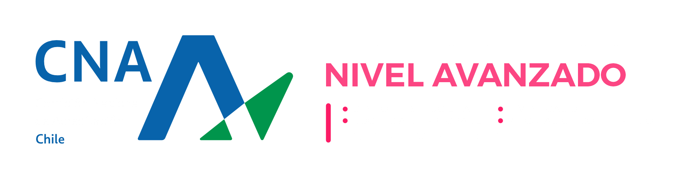

PROGRAMAS DE ESTUDIO
DEPENDENCIAS UNIVERSITARRIAS
Radio Universitaria
PLATAFORMAS - MI ULS
IDENTIDAD VISUAL ULS
CONTACTA POR UNIDADES
Benavente 980 -La Serena - Chile
51 2 20 4000

CONTACTA POR UNIDADES
Benavente 980 -La Serena - Chile
51 2 20 4000
© 2025 Derechos reservados
Desarrollado por estudiantes de Ingeniería en computación de la Universidad
de la Serena